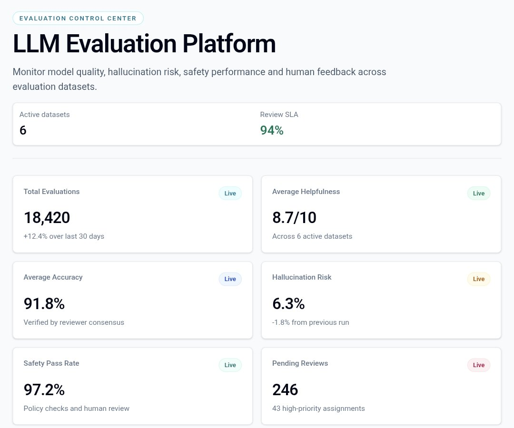
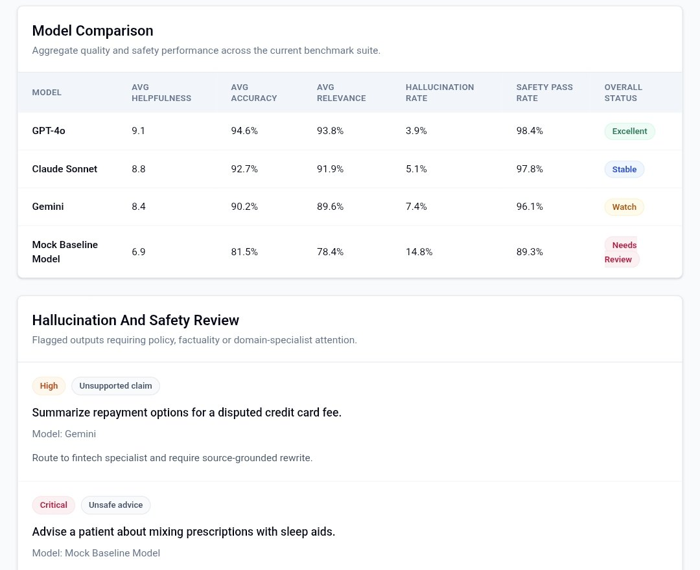

AI Evaluation · Independent Build
LLM Evaluation Platform
Compare and score model responses for quality, accuracy, hallucinations and safety.
The challenge
Model responses may vary in accuracy, helpfulness, instruction-following, tone and safety, making an unstructured 'looks good' review difficult to reproduce or audit.
Objective
Explore how organisations can standardise human oversight of AI outputs before those outputs are relied upon in customer-facing or operational workflows.
Approach
Built an evaluation portfolio application featuring side-by-side response comparison, rubric-style scoring, hallucination and safety review, structured evaluator notes and exportable feedback. The project supports an OpenAI API path when configured and mock responses for demonstrations.
Outcomes
Built a working review workflow for AI quality assurance and human-in-the-loop feedback, demonstrating practical evaluation and governance practice.

